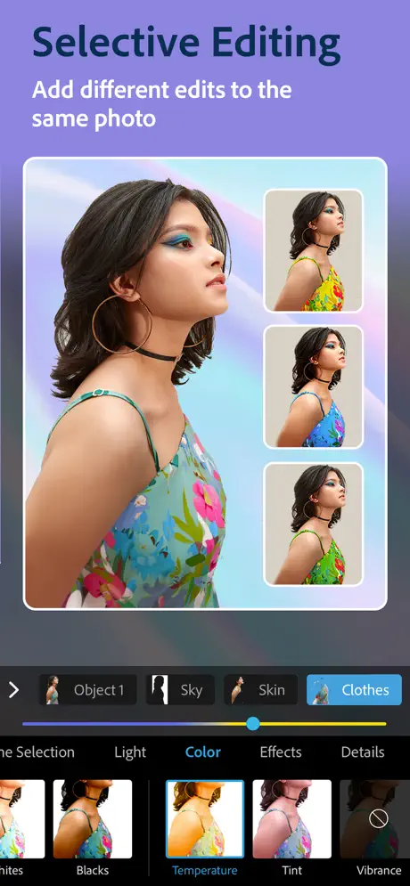
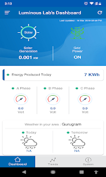

About me
I'm a Senior iOS Developer at Walmart having 8+ years of experience.
I'm used to working in fast-paced environments and collaborating with interdisciplinary teams like
Design,
Testing, Platform and Analytics.
Previously, I worked at Adobe Systems and NEC Corp, India where I built iOS Apps related to
Image Processing and IoT.
I have a special corner in my heart for performance optimization and clean code architecture as well as building apps for causes like Fitness, Animal Health, Dating and Finances.
Skills
- Swift
- Xcode
- iOS
- UIKit
- SwiftUI
- Combine
- XCTest
- Core Bluetooth
- Core Location and Mapkit
- MVVM-C
- TMA (by Tuist)
- TCA (by PointFree)
Projects
-
Walmart
Worked in Walmart Shopping iOS App to build various features.
Key Features:
• Implemented Cart, Checkout and Auto Care Centre allowing users to handle Grocery and Tire Installations.
• Developed Slot Shortcut for Tire Intallation to boost Tire Installation Reservations.
• Integrated DS Nations Card for easy life of everyone.
• Optimized Cart performance resulting in a 80% reduction in load times by using Collection View.
• Led multiple initiatives across the platforms.
-

Adobe Photoshop Express
Worked in Adobe PSX Team to build Collage Functionality.
Key Features:
• Developed Collage feature allowing users to create photo collages with various layouts and styles.
• Implemented image editing tools including cropping, resizing, and applying layouts within collages.
• Integrated Machine analysed Color Palatte which generates thematic colours based on input images.
• Optimized performance for smooth user experience while handling multiple images in a collage.
-

Connect By Luminous
Connect by Luminous is an iOS App built to monitor electronic devices such as Invertors and Batteries.
Key Features:
• Monitor real-time device status including battery health, power consumption and performance metrics.
• Control device settings remotely from the app.
• View historical data and usage trends through interactive charts and graphs.
• It leverages IoT and MQTT protocols to fetch real-time data from the devices and display it on the app.
• I developed this app using Swift, UIKit & Firebase, and published it on the App Store.
Resume
Download ResumeExperience
-
Walmart Global Tech Ltd, India
June 2022 — PresentSenior iOS Engineer
- • Contributed to development of Walmart Shopping iOS App with 4.8 rating and 12M+ reviews on App Store.
- • Implemented MVVM-C architecture across multiple modules, improving code readability and test coverage to 90%.
- • Collaborated with cross-functional teams to integrate new features.
-
Adobe Systems, India
June 2021 — June 2022Senior Engineer
- • Adobe PSX app is rated 4.7 with 700K ratings. Written in Swift, Obj-C & Open-CV.
- • Authored a tool to convert the Collage Layouts from XD files to JSON files which reduced the size by 99%.
- • Improved Usage Analytics capturing for 3+ features to enhance user experience.
- • Initiated Multi Variant (A/B) experiments deploying Splunk Analytics to elevate successful variant.
-
NEC Technologies India Pvt Ltd, India
November 2017 — June 2021Senior Member of Technical Staff
- • Authored iOS application for Luminous Inverters using UIKit , Swift , APNS, RESTful api et al, leveraging MQTT & IoT for Hardware monitoring.
- • Trained one mentee to develop iOS Applications.
- • Developed Azure SDK Transcription based iOS Application to join Zoom meeting with live interpretation.
- • Self learnt iOS and built the Connect by Luminous iOS App.
- • Published the App to App Store.
Education
-
Harcourt Butler Technological Institute, Kanpur
2014 — 2017Studied Computer Applications, specializing in software engineering and data structures. Graduated with 77.4%.
-
St. John's College, Agra
2010 — 2013Studied Computer Science, with a focus on software development and algorithms. Graduated with honors. Minor in Mathematics and Statistics.